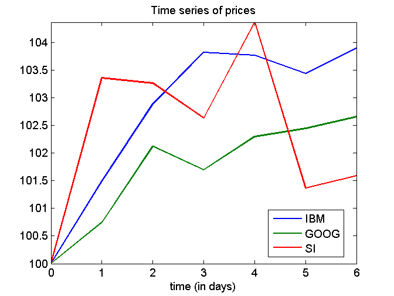
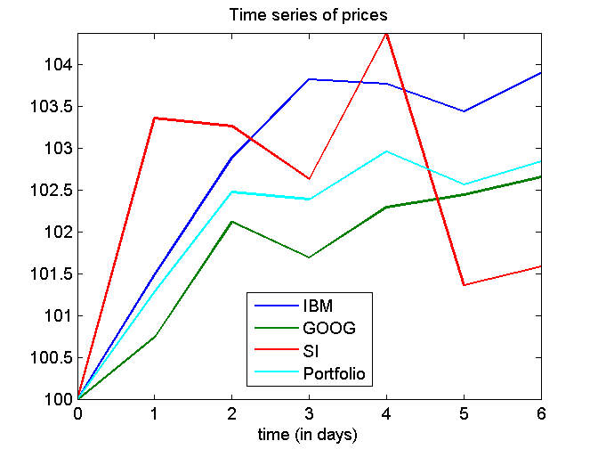
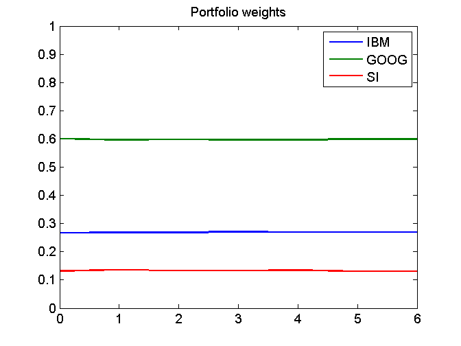

Contents
- demo_investmentPortfolio: Time series of portfolio values from the series of asset prices (code).
- load the data
- Each row corresponds to the time series of prices of an asset
- D: Number of assets, N: length of the time series
- Plot the time series
- normalize the prices so that the initial values are equal
- plot the normalized prices of the assets in the portfolio
- Build time series of portfolio values
- define the composition of the portfolio
- compute series of portfolio values
- normalize so that the initial values are equal
- plot the normalized prices of the assets in the portfolio
- Portfolio weights
- Compute the time series of portfolio weights
- plot the series of portfolio weights
function demoCode_investmentPortfolio
demo_investmentPortfolio: Time series of portfolio values from the series of asset prices (code).
format short
load the data
S = load('closingPrices_IBM_GOOG_SI_2007_07_01_2013_06_30.txt'); S = S(1:7,:); % Look at a short series of prices for all assets
Each row corresponds to the time series of prices of an asset
Time increases with the index of the colums
S = S'
S = 94.5000 95.9100 97.2300 98.1100 98.0600 97.7500 98.1800 530.3800 534.3400 541.6300 539.4000 542.5600 543.3400 544.4700 117.0500 120.9800 120.8700 120.1300 122.1600 118.6500 118.9100
D: Number of assets, N: length of the time series
[D,N] = size(S);
% start counting at 0
N = N-1;
Plot the time series
normalize the prices so that the initial values are equal
initialValue = 100.0; for d = 1:D normalizedS(d,:) = initialValue*S(d,:)/S(d,1); end normalizedS
normalizedS = 100.0000 101.4921 102.8889 103.8201 103.7672 103.4392 103.8942 100.0000 100.7466 102.1211 101.7007 102.2965 102.4435 102.6566 100.0000 103.3575 103.2636 102.6314 104.3657 101.3669 101.5891
plot the normalized prices of the assets in the portfolio
figure(1); clf; plot(0:N,normalizedS); axis('tight') xlabel('time (in days)'); legend('IBM','GOOG','SI',0); title('Time series of prices');
Build time series of portfolio values
define the composition of the portfolio
c = [5; 2; 2];
compute series of portfolio values
P = c'*S
P =
1.0e+03 *
1.7674 1.7902 1.8112 1.8096 1.8197 1.8127 1.8177
normalize so that the initial values are equal
normalizedP = initialValue*P/P(1)
normalizedP = 100.0000 101.2918 102.4777 102.3906 102.9637 102.5671 102.8461
plot the normalized prices of the assets in the portfolio
hold on plot(0:N,normalizedP,'c'); hold off axis('tight') legend('IBM','GOOG','SI','Portfolio',0); xlabel('time (in days)'); title('Time series of prices');
Portfolio weights
Compute the time series of portfolio weights
c_repmat = repmat(c,1,N+1) S P_repmat = repmat(P,D,1)
c_repmat =
5 5 5 5 5 5 5
2 2 2 2 2 2 2
2 2 2 2 2 2 2
S =
94.5000 95.9100 97.2300 98.1100 98.0600 97.7500 98.1800
530.3800 534.3400 541.6300 539.4000 542.5600 543.3400 544.4700
117.0500 120.9800 120.8700 120.1300 122.1600 118.6500 118.9100
P_repmat =
1.0e+03 *
1.7674 1.7902 1.8112 1.8096 1.8197 1.8127 1.8177
1.7674 1.7902 1.8112 1.8096 1.8197 1.8127 1.8177
1.7674 1.7902 1.8112 1.8096 1.8197 1.8127 1.8177
w = c_repmat.*S./P_repmat
w =
0.2673 0.2679 0.2684 0.2711 0.2694 0.2696 0.2701
0.6002 0.5970 0.5981 0.5962 0.5963 0.5995 0.5991
0.1325 0.1352 0.1335 0.1328 0.1343 0.1309 0.1308
plot the series of portfolio weights
figure(2); clf plot(0:N,w); axis([0 N 0 1]) title('Portfolio weights'); legend('IBM','GOOG','SI')